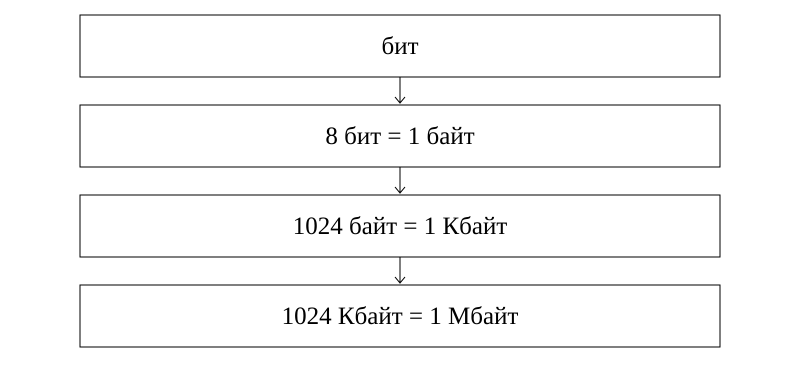

Ақпараттың өлшем бірліктері
1. Оқу мақсаттары
Бит пен байтты ажырату
Екілік өлшем бірліктерін реттеу
Таңба саны мен ақпарат көлемін шатастырмау
2. Алдын ала білу қажет
Натурал сандар
Көбейту мен бөлу
Санның дәрежесі
3. Негізгі теория
Бит және байт
Бит екі мәннің бірін сақтайды: 0 немесе 1. Биттің мәні мен бит саны екі түрлі нәрсе. 00000000 жазбасында сегіз бит бар, олардың мәндері нөл. Байт сегіз биттен тұрады. Сондықтан байт саны бірдей деректің бит саны одан сегіз есе үлкен.
Дереккөз: S1:4; S4:4
Ірі өлшем бірліктері
Бұл курстың есептерінде, өзгеше айтылмаса, 1 Кбайт = 1024 байт, 1 Мбайт = 1024 Кбайт, 1 Гбайт = 1024 Мбайт. Бұл екілік есептеу келісімі. KiB, MiB, GiB белгілері осы екілік еселіктерді бірмәнді көрсетеді. Ондық kB = 1000 байт, MB = 1 000 000 байт деп берілген есепте сол шартты қолданыңыз. Көлемдерді салыстырғанда алдымен бәрін бір бірлікке келтіріңіз. Мысалы, 1 Мбайт пен 900 Кбайтты жай 1 және 900 деп салыстыруға болмайды.
Дереккөз: S1:5; S3:8; E1
Таңба және кодтау
Таңба әріп, цифр, тыныс белгісі немесе бос орын болуы мүмкін. Әр таңбаға i бит бөлінетін тұрақты ұзындықты кодтауда K таңбаның көлемі I = K × i бит. «Бір таңба бір байт» деген шарт берілсе ғана i = 8 алынады. Нақты мәтін файлында кодтау мен қызметтік деректер де көлемге әсер етеді.
Дереккөз: S2:14; E2
Бит тізбектерінің саны
Әр биттің екі мүмкін мәні бар. Екі битпен 00, 01, 10, 11 деген төрт тізбек жасалады. Жалпы n бит үшін тізбектер саны 2ⁿ. Бұл тізбектер саны, файл көлемі емес. Бір байтта 256 түрлі бит тізбегі болуы мүмкін.
Дереккөз: S2:7-8
4. Терминдер
Байт неше бит?
8 бит.
0000 көлемі қандай?
4 бит.
n бит неше тізбек береді?
2ⁿ.
I = K × i қашан қолданылады?
Әр таңбаға бірдей i бит бөлінгенде.
5. Сызба

Биттер байтқа, байттар ірі бірліктерге топтасады. Сызбадағы теңдіктер осы курстың екілік келісіміне негізделген.
Осы сабаққа жаңадан жасалған сызба.6. Қадамдық мысалдар
6 байтта неше бит бар?
- 1 байт = 8 бит.
- 6 × 8 = 48 бит.
- Кері тексеру: 48 ÷ 8 = 6 байт.
«A B!» мәтініндегі әр таңба 1 байт. Көлемі қандай?
- A, бос орын, B, !: барлығы 4 таңба.
- 4 × 1 = 4 байт.
- 4 × 8 = 32 бит. Тырнақшалар мәтінге кірмейді.
3 бит неше түрлі тізбек береді?
- Әр позицияның екі мәні бар.
- 2 × 2 × 2 = 8 тізбек.
- 000, 001, 010, 011, 100, 101, 110, 111.
Жазылым үлгісі
I = K × i (бит)
1 байт = 8 бит7. Салыстыру кестесі
| Бірлік | Екілік келісімдегі мәні |
|---|---|
| бит | 0 немесе 1 мәнін сақтайды |
| байт | 8 бит |
| Кбайт (KiB) | 1024 байт |
| Мбайт (MiB) | 1024 Кбайт |
| Гбайт (GiB) | 1024 Мбайт |
8. Жиі кездесетін қателер
Нөлдерден тұратын деректің көлемін нөл деу: мәні нөл болса да әр позиция бір бит алады.
Бос орынды санамау: кодталатын бос орын да таңба.
Кодтау шарты жоқ мәтінге бір таңба = бір байт ережесін қолдану.
9. A, B, C деңгейіндегі тапсырмалар
A деңгейі
7 байтты битпен жазыңыз.
Шешімін тексеру
7 × 8 = 56 бит.
B деңгейі
«KZ 7» мәтініне әр таңбаға 8 бит бөлінді. Тырнақшасыз көлемі қандай?
Шешімін тексеру
Бос орынмен бірге 4 таңба. 4 × 8 = 32 бит = 4 байт.
C деңгейі
32 түрлі белгіні тұрақты ұзындықпен кодтау үшін ең аз неше бит керек?
Шешімін тексеру
2⁴ = 16 жеткіліксіз, 2⁵ = 32 жеткілікті. Ең азы 5 бит.
10. Өзін-өзі тексеру
Бұл 15 сұрақ бір дұрыс жауапты авторлық жаттығулар. Әр сұрақта бес нұсқа бар. A/B/C бойынша 5/5/5 үлесі оқу үшін таңдалды. Ресми ҰБТ нұсқасының толық көшірмесі емес: 2026 спецификациясында 25 жеке бір жауапты, контекстегі 5 бір жауапты, 5 бір немесе бірнеше жауапты және 5 сәйкестендіру тапсырмасы бар. Ресми күрделілік үлесі 50/30/20, бұл жинақта 5/5/5.
Алғашқы жауап есепке алынады. Барлық нұсқаның түсіндірмесі тексергеннен кейін ашылады.
11. Жауаптарды талдау
Әр тест жауабынан кейін дұрыс жауаптың шешімі көрсетіледі. «Барлық нұсқаның түсіндірмесі» арқылы төрт қате нұсқаның себебін қараңыз. Толық жауап кілті баспа оқулықта да бар.
12–15: аралас тапсырмаларға өтіңіз. 8–11: қате тақырыптарды қайталаңыз. 0–7: теория мен мысалдарға оралыңыз. Бұл оқу бағдары, ресми баға емес.
12. Қысқаша қорытынды
Бит екі мәнді қабылдайды, байт 8 биттен тұрады.
Таңба саны мен байт саны тек кодтау шарты арқылы байланысады.
Өлшем келісімін оқып, бірліктерді біріздендіріңіз.
13. Қайталау карточкалары
Байт неше бит?
8 бит.
0000 көлемі қандай?
4 бит.
n бит неше тізбек береді?
2ⁿ.
I = K × i қашан қолданылады?
Әр таңбаға бірдей i бит бөлінгенде.
14. Дереккөздер
S1. Р.А. Қадырқұлов, Ә.Д. Рысқұлбекова, Г.К. Нұрмұханбетова. Алматыкітап, 2023. 1.pdf, беттер: 4, 5.
S2. С.Т. Мұхамбетжанова, А.С. Тен, Л.Г. Дедмедова. Атамұра, 2021. 2.pdf, беттер: 7, 8, 14.
S3. Г.И. Салғарева, А.С. Маханова, Л.А. Расина. Арман-ПВ, 2021. 3.pdf, беттер: 8.
S4. Р.А. Қадырқұлов, А.Д. Рысқұлбекова. Алматыкітап, 2019. 4.pdf, беттер: 4.
NIST: Binary prefixes: Екілік және ондық еселіктерді ажырату
Unicode FAQ: UTF-8, UTF-16, UTF-32: Бір таңба әрдайым бір байт емес
ҰТО: 2026 информатика спецификациясы: Ресми тапсырма түрлері мен күрделілік үлесі
Түсіндірмелер, тапсырмалар және сызба жаңадан жасалды. Оқулық суреттері көшірілген жоқ. Толық шығу тегі: sources.json.